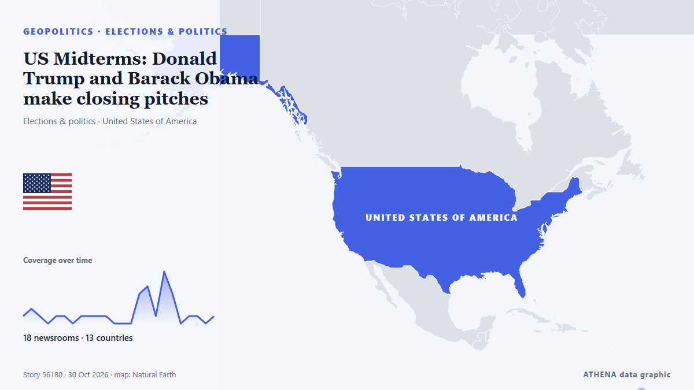

US Midterms: Donald Trump and Barack Obama make closing pitches

In the United States, Democrats are turning to Barack Obama to rally voters ahead of the midterm elections, a crucial test that could shape the remainder of Donald Trump's presidency. из France 24 English
Независимые источники: 18 изданий в 13 странах, с 27 окт.; первым сообщил The Hill; освещение идёт на спад. ATHENA оценивает риск как низкий (1.6/10), прежде всего из-за тяжести описываемого ущерба и географического и отраслевого охвата. Уверенность — 89 % (высокая); подтверждают независимые источники: 18 изданий, средняя надёжность источников — 76 %. СМИ по странам: Сингапур (7), Соединенные Штаты (6), Великобритания (5). Освещение: с 27 окт. по 30 окт., 69 ч.
Почему это важно: События в сфере безопасности и дипломатии могут менять союзы, торговлю и рынки далеко за пределами непосредственно затронутых стран.
Что изменилось: 20 новых сообщений от 12 редакций за 24 часа до 30 окт..
Первый заголовок: Trump, Vance and Obama are making closing stretch appeals to midterm voters in pivotal states
Заголовки приводятся на английском языке, как они были опубликованы.
Коротко в цифрах
Отобрано, оценено и написано по опубликованной методологии ATHENA. Ни один редактор не вмешивается в отдельные события. Как это создаётся ›
| 27 Oct 19:01 UTC | 1 |
|---|---|
| 27 Oct 22:01 UTC | 2 |
| 28 Oct 01:01 UTC | 1 |
| 28 Oct 04:01 UTC | 0 |
| 28 Oct 07:01 UTC | 1 |
| 28 Oct 10:01 UTC | 1 |
| 28 Oct 13:01 UTC | 0 |
| 28 Oct 16:01 UTC | 1 |
| 28 Oct 19:01 UTC | 1 |
| 28 Oct 22:01 UTC | 1 |
| 29 Oct 01:01 UTC | 1 |
| 29 Oct 04:01 UTC | 0 |
| 29 Oct 07:01 UTC | 0 |
| 29 Oct 10:01 UTC | 0 |
| 29 Oct 13:01 UTC | 4 |
| 29 Oct 16:01 UTC | 5 |
| 29 Oct 19:01 UTC | 1 |
| 29 Oct 22:01 UTC | 7 |
| 30 Oct 01:01 UTC | 4 |
| 30 Oct 04:01 UTC | 0 |
| 30 Oct 07:01 UTC | 1 |
| 30 Oct 10:01 UTC | 1 |
| 30 Oct 13:01 UTC | 0 |
| 30 Oct 16:01 UTC | 1 |
Откуда эти цифры
Значимость
Риск
Уверенность
Освещение — кто сообщил и когда
заголовок в оригинале · открывает источник- The Hill · Соединенные ШтатыDCCC pushes for ads targeting GOP on AI, data centers in dozens of key House races
- PBS NewsHour · Соединенные ШтатыInside Georgia's push to rebuild trust in elections after Trump's false claims
- PBS NewsHour · Соединенные ШтатыDemocrats put economy and affordability at center of final campaign push
- Euronews English · ФранцияWhat do Hispanic voters think about the US midterms?
- CBC News · КанадаWhy the Hispanic vote could sway the outcome of the U.S. midterm elections
- Egypt Independent · ЕгипетWhy Trump’s latest election warning is impossible to ignore
- The Canadian Press (via CityNews) · КанадаTrump, Vance and Obama are making closing stretch appeals to midterm voters in pivotal states
- PBS NewsHour · Соединенные ШтатыWATCH: Obama blasts Trump for lack of real solutions as he stumps for Ossoff and Bottoms in Georgia
- PBS NewsHour · Соединенные ШтатыNew polls suggest surprising Democratic gains in red-state Senate races
- The Straits Times · СингапурTrump and Obama trade barbs in closing week of US midterm elections
- The Independent · ВеликобританияObama gets rock star welcome as he campaigns with Democrats in Georgia
- France 24 English · ФранцияUS Midterms: Donald Trump and Barack Obama make closing pitches
- The Independent · ВеликобританияLiberals applaud Obama’s ‘standup-level funny’ response to Cheesecake-gate and Trump’s overreaction
- The Independent · ВеликобританияTrump can’t stop comparing his crowd size to Vance’s, insiders reveal
- The Independent · ВеликобританияTrump cancels final Kansas and Iowa rallies before Election Day — and unloads on reporters asking about it
- The Independent · ВеликобританияTrump’s Cheesecake Factory fixation reveals his true weakness in the midterms homestretch
- Sydney Morning Herald · АвстралияAt The Cheesecake Factory, a campaign culture war is blissfully ignored
- The Hill · Соединенные ШтатыTrump cancels Kansas midterm rally
- The Daily Star — page reader · БангладешUS MIDTERM ELECTION / Trump, Obama trade barbs on campaign trail
- CNA (Channel NewsAsia) · СингапурCNA Explains: Why do the US midterm elections matter?
- New Straits Times · МалайзияTrump scraps last US midterm rallies
- The Straits Times · СингапурTrump cancels weekend rallies, plans to phone in to other midterm campaign events
- RTÉ News · ИрландияTrump reinstates rallies in turbulent end to US midterms
- Free Malaysia Today · МалайзияTrump scraps midterm rallies, plans to phone in to other campaign events
- Sydney Morning Herald · АвстралияWhat Donald Trump will do after the midterms – lose or lose
- CNA (Channel NewsAsia) · СингапурTrump cancels weekend rallies, plans to phone in to other midterm campaign events
- CNA (Channel NewsAsia) · СингапурBeyond Trump: US midterms offer early test in battle for White House in 2028
- Times of India · ИндияUS midterms: Trump skips rallies in two red states, takes phone route to rescue GOP
- The Straits Times · СингапурUS Democrats push anti-corruption message in midterm homestretch
- New Straits Times · МалайзияHow Trump could interfere in US midterm elections
- Khaama Press · АфганистанObama vs. Trump in Georgia: Whose Rally Drew the Bigger Crowd?
- Al Jazeera English · КатарGeorgia midterm elections: Why this is a key US battleground
- The Straits Times · СингапурTrump, Obama serve up a food fight in final days of midterm campaign